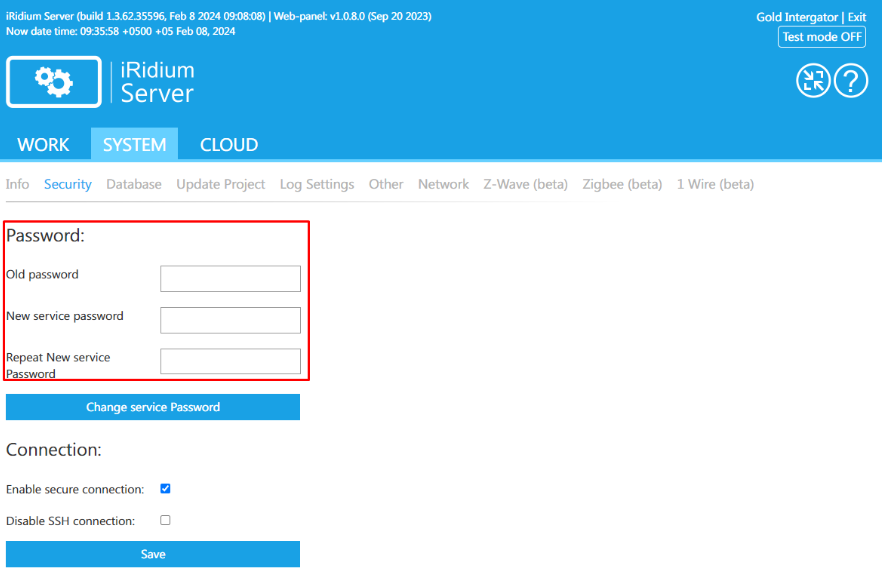
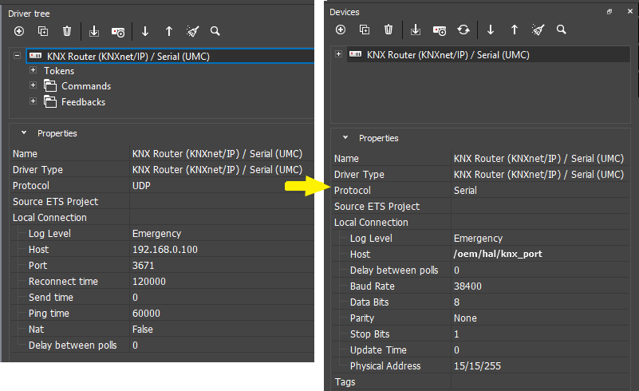
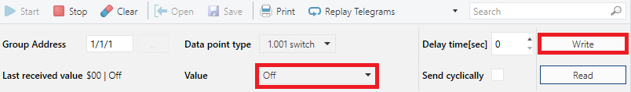

iRidi Pro Server (HS Сервер)
Инсталляция и запуск iRidi Pro Server на базе контроллера HS Сервер
документация обновлена 25.4.2024
iRidi Pro Server (HS Сервер) - программная реализация iRidi Pro Server, которая запускается как демон или консольное приложение на контроллере HS Сервер.
Инструкции, описанные в этой статье, подходят для работы с HS Сервер в продуктах:
О безопасном перехода с платформы UMC С3 на HS-сервер смотрите в статье Замена UMC на HS Сервер
Актуальные технические характеристики смотрите в статье «HS Сервер».
1 Подключите контроллер к локальной сети и питанию по инструкции.
2 С помощью приложения iRidium transfer или стандартным сканером LAN-сети (например, Advanced Port Scanner) определите IP-адрес контроллера HS Сервер.
3 Используйте этот адрес, чтобы открыть веб-интерфейс сервера в браузере:
Сервер получает лицензию и проект из облака после авторизации разработчика (интегратора) в веб-интерфейсе сервера с учетной записью на сайте iridi.com. Для этого запустите сервер, откройте web-интерфейс и активируйте сервер:
В маршрутизаторе должен быть активирован DHCP-сервер. При ошибке получения ip-адреса устанавливается статический адрес: 192.168.77.77.
Измените IP-адрес контроллера, в соответствии с адресацией в вашей сетевой инфраструктуре. Настройки доступны в веб-интерфейсе сервера на странице System > Network.
Вы можете назначить:
DHCP-адрес (выдаётся автоматически):
Статический IP-адрес:
Чтобы применить настройки, нажмите Save, вернитесь на главную страницу веб-интерфейса и нажмите кнопку Reboot System. Веб-интерфейс теперь станет доступен по новому адресу.
В случае потери доступа к веб-интерфейсу используйте инструкцию Сброс на заводские настройки, чтобы вернуть настройки IP-адреса по умолчанию.
В web-интерфейсе iRidium Server на странице System -> Security представлены настройки обеспечения безопасности сервера.
Данная функция используется для изменения пароля для доступа к web-интерфейсу сервера.
Для изменения пароля требуется ввести ваш текущий пароль, новый пароль и повторить его.
После нажатия кнопки Change service Password для доступа к web-интерфейсу будет использоваться новый пароль.

Данная функция отвечает за активацию защищенного соединения HTTPS (SSL) для доступа к web-интерфейсу iRidium Server.
Для включения защищенного подключения требуется в web-интерфейсе на вкладке Security включить чек-бокс Enable secure connection и нажать кнопку Save.
После включения данной функции сервер изменит порт доступа к web-интерфейсу на 8443 (ip адрес сервера:8443).
Для выключения доступа по SSL требуется выключить чек-бокс и нажать кнопку Save, сервер возвращает свой стандартный порт 8888 для доступа к web-интерфейсу (ip адрес сервера:8888).
Данная функция отвечает за доступность сервера для SSH подключения.
Для ограничения доступа по SSH к серверу требуется включить соответствующий чек-бокс на странице Security и нажать кнопку Save.
Ограничение доступа будет осуществляться только при условии наличия загруженного проекта на сервер!
Для возвращения возможности SSH подключения к серверу требуется выключить чек-бокс и нажать кнопку Save.
1 Откройте веб-интерфейс сервера на вкладке System > Info, нажмите кнопку Update.
2 Установите галочку под пунктом Get latest version from the iRidium website (по умолчанию активирована) и нажмите кнопку UPDATE. С сайта iridi.com автоматически установится последняя версия сервера.
При необходимости вы можете установить определенную версию сервера по ссылке на файл обновления. Для этого необходимо снять галочку с пункта Get latest version from the iRidium website, вставить ссылку на скачивание файла в поле ввода и нажать кнопку UPDATE
Ссылку можно скопировать на сайте iridi.com, в разделе Загрузки.
Веб-интерфейс сервера станет недоступен на несколько минут, затем обновлённый сервер запустится автоматически.
Не отключайте питание контроллера во время обновления! При наличии большой базы данных обновление иногда может занять до нескольких десятков минут!
Для сброса контроллера iRidi Pro Server (HS Сервер) на заводские настройки воспользуйтесь инструкцией.
Восстановление работоспособности
Если вы не можете открыть веб-интерфейс iRidi Pro Server (сервер не запускается, веб-интерфейс не работает), используйте следующие шаги приведенные в этой инструкции по аварийному запуску/обновлению/откату прошивки на контроллере. Для этого необходимо подключиться к устройству(контроллеру) по протоколу ssh.
Подключение к устройству (контроллеру) по протоколу SSH
1 Определите IP-адрес контроллера удобным способом (например, с помощью iRidi transfer или сканером LAN-сети).
2 Скачайте и запустите программу PuTTY.
3 Настройте программу следующим образом:
и нажмите Open.
4 В открывшейся консоли введите:
5 Если логин и пароль введены верно, вы увидите приветственное сообщение IRIDI. Станет доступна консольная строка, с помощью которой можно выполнить принудительный запуск сервера, обновление и откат сервера.
1 Перейдите в папку /iridiumserver/:
cd /iridiumserver/
2 Введите команду запуска сервера в фоновом режиме (чтобы сервер не закрылся при закрытии PuTTY)
./iridium --force --hidden
3 В случае успеха сервер запустится и будет готов к работе.
Данные действия выполняются в случае полной потери доступа к веб-интерфейсу сервера. Если доступ к интернету отсутствует, то воспользуйтесь инструкцией Обновление и откат версии при отсутствии доступа к интернету.
1 Загрузите последнюю версию iRidi Pro Server (HS Сервер) в корневую папку контроллера:
wget -O iridiumPro.ipk --no-check-certificate https://iridi.com/redirects/?go=iRidium_Server_HS_Server
2 Проверьте содержимое папки (убедитесь, что файл .ipk присутствует в папке):
ls
3 Запустите установку более новой версии сервера:
opkg install iridiumPro.ipk
Или откатите версию сервера до более старой:
opkg install --force-downgrade iridiumPro.ipk
Если при установке более старой версии не использовать ключ --force-downgrade, установка не будет произведена.
4 После установки сервер запустится автоматически. Сервер готов к работе.
Обновление и откат версии при отсутствии доступа к интернету
1 Установите и запустите WinSCP:
Нажмите Login.
2 Скопируйте файл установки сервера HS Сервер (.ipk) в корневую папку /root контроллера iRidi Pro Server (HS Сервер), используя WinSCP.
3 В консольной строке проверьте содержимое корневой папки (убедитесь, что файл .ipk присутствует):
ls
4 Запустите установку более новой или такой же версии сервера:
opkg install <file-name>.ipk
Или откатите версию сервера до более старой:
opkg install --force-downgrade <file-name>.ipk
Если при установке более старой версии не использовать ключ --force-downgrade, установка не будет произведена.
5 После установки сервер запустится автоматически. Сервер готов к работе.
1 Когда сервер подготовлен, перейдите к разработке его конфигурации и логики: Серверный проект в iRidi Studio.
2 Готовый проект загрузите на iRidi Server: Запуск конфигурации iRidi server.
Настройка интерфейса Bus77 (TCP\IP)
По умолчанию, интерфейс Bus77 активирован и можно сразу начинать работу с оборудованием Bus77:
1 В web-интерфейсе сервера, на вкладке System > Other, убедитесь, что активировано подключение CAN 0 (TCP Port 30467) (по умолчанию включено).
2 В iRidium Studio создайте новый Bus77 проект: File> New > New Bus77 Project.
3 Подключитесь и отсканируйте шину Bus77.
4 Добавьте найденные устройства в проект Bus77.
Если отключить параметр CAN 0 (TCP Port 30467) на веб-интерфейсе, то подключение к шине Bus77 по IP будет невозможно. Этот режим может быть полезен для ограничения подключений к шине по TCP во время пусконаладочных работ (сканирование и настройка шины происходит только по TCP).
Настройка интерфейса Bus77 (CAN-шина)
Для работы с шиной Bus77 непосредственно из приложения iRidium Server напрямую по CAN интерфейсу, необходимо:
1 В web-интерфейсе сервера, на вкладке System > Other, отключите параметр CAN 0 (TCP Port 30467) (по умолчанию включено).
2 В iRidium studio создайте новый серверный проект: File> New > New Server Project.
3 Добавьте драйвер Bus77 в проект с помощью импорта устройств из приложения Bus77 Home или с помощью проекта Bus77 в iRidium Studio.
4 Загрузить готовый серверный проект в приложение iRidium Server на устройстве HS Сервер.
Контроллер HS Сервер имеет встроенный порт RS232, который можно использовать, например, для обмена данными по протоколу Modbus RTU или Modbus ASCII.
Далее приводится пример настройки интерфейса RS232 для работы по протоколу Modbus RTU. Другие протоколы (драйверы) настраиваются аналогично.
1 В iRidium studio создайте новый проект для iRidium server: File> New > New Server Project...
2 Добавьте драйвер Modbus RTU в проект:
3 Настройте параметры соединения:
В веб интерфейсе стоповые биты отображаются как:
|
iRidium studio: |
Web-интерфейс: |
|
1 |
0 |
|
1,5 |
1 |
|
2 |
2 |
Изучите руководства по эксплуатации остальных устройств на шине RS232: настройте одинаковую скорость передачи данных на всех устройствах, задайте одинаковые параметры Data Bits, Parity, Stop Bits. Помимо этого, каждое устройство на шине должно иметь уникальный идентификатор (Device ID).
4 Настройте необходимое количество каналов. В каждом канале необходимо задать параметры Modbus RTU:
5 После этого проект настроен для передачи данных по протоколу Modbus RTU.
Контроллер HS Сервер имеет встроенный порт RS485, который можно использовать, например, для обмена данными по протоколу Modbus RTU или Modbus ASCII.
Далее приводится пример настройки интерфейса RS485 для работы по протоколу Modbus RTU. Другие протоколы (драйверы) настраиваются аналогично.
1 В iRidium studio создайте новый проект для iRidium server: File> New > New Server Project...
2 Добавьте драйвер Modbus RTU в проект:
3 Настройте параметры соединения:
В веб интерфейсе стоповые биты отображаются как:
|
iRidium studio: |
Web-интерфейс: |
|
1 |
0 |
|
1,5 |
1 |
|
2 |
2 |
Изучите руководства по эксплуатации остальных устройств на шине RS485: настройте одинаковую скорость передачи данных на всех устройствах, задайте одинаковые параметры Data Bits, Parity, Stop Bits. Помимо этого, каждое устройство на шине должно иметь уникальный идентификатор (Device ID).
4 Настройте необходимое количество каналов. В каждом канале необходимо задать параметры Modbus RTU:
5 После этого проект настроен для передачи данных по протоколу Modbus RTU.
Настройка интерфейса HDL Buspro
HDL-шлюз - это связь между портами LAN и CAN. При включенном HDL-шлюзе - устройства, находящиеся на шине CAN, могут обмениваться данными с устройствами, находящимися в сети Ethernet, как будто они все находятся на одной шине. На стороне Ethernet-сети используется протокол TCP
Порты RS485 и LAN можно использовать для реализации обмена данными по протоколу HDL Buspro.
Активация HDL-шлюза через веб-интерфейс
HDL-шлюз - это связь между портами LAN и RS485: при включенном HDL-шлюзе устройства, находящиеся на шине RS485, могут обмениваться данными с устройствами, находящимися в сети Ethernet, как будто бы они все находятся на одной шине. На стороне Ethernet-сети используется протокол UDP.
Самый простой способ - активировать режим HDL-шлюза в веб-интерфейсе сервера на вкладке Network > SYSTEM > Other > Server working mode.
Драйверы типа "HDL-BUS Pro (Serial)" и "HDL-BUS Pro (UDP)" должны отсутствовать в проекте.
В этом случае не будет возможности управлять устройствами HDL из приложения iRidium Server, так как будут отсутствовать необходимые драйвера в проекте.
HDL-шлюз может фильтровать передачу команд, передающихся по шине, по идентификатору подсети Subnet ID.
Для использования этой функции необходимо:
Теперь сервер при получении данных будет проверять Subnet ID устройства, которому эти данные принадлежат, и, если Subnet ID совпадает с указанным в фильтре, сервер обработает данные, если нет - проигнорирует их.
Настройка HDL Buspro на стороне RS485
1 В iRidium studio создайте новый проект для iRidium server: File> New > New Server Project...
2 Добавьте драйвер HDL Buspro Network и необходимое количество устройств HDL Buspro в проект:
3 Настройте общие параметры шины:
В веб интерфейсе стоповые биты отображаются как:
|
iRidium studio: |
Web-интерфейс: |
|
1 |
0 |
|
1,5 |
1 |
|
2 |
2 |
4 Настройте параметры каждого устройства на шине HDL Buspro.
Каждое устройство в пределах подсети шины должно иметь уникальный идентификатор (Device ID).
5 Задайте параметры каждого канала:
Наиболее важные параметры Command и Feedback драйвера HDL Buspro:
Изучите руководство по эксплуатации устройства HDL Buspro, чтобы правильно настроить сервер для обмена данными с ним.
6 После этого проект настроен для передачи данных по протоколу HDL Buspro через порт RS485.
Настройка HDL Buspro на стороне LAN
1 Добавьте драйвер HDL Buspro Network (UDP) и необходимое количество устройств HDL Buspro в проект:
2 Настройте общие параметры сети:
3 Настройте параметры каждого устройства на шине HDL Buspro и параметры каждого его канала (по аналогии с предыдущим разделом).
4 После этого проект настроен для передачи данных по протоколу HDL Buspro через порт LAN.
Активация HDL-шлюза с помощью скрипта
Создайте пустой файл скрипта (иконка JS на верхней панели инструментов + New Script) и вставьте в него скрипт:
IR.AddListener(IR.EVENT_START, 0, function()
{
var HDL_UDP = IR.GetDevice("HDL Buspro Network (UDP)"); //name of HDL Buspro (UDP) driver in your project
var HDL_Serial = IR.GetDevice("HDL Buspro Network (RS485)"); //name of HDL Buspro (RS485) driver in your project
if (HDL_UDP && HDL_Serial) { //check for drivers existence in project
HDL_UDP.SetParameters({RouteDevice: HDL_Serial.Name});
HDL_Serial.SetParameters({RouteDevice: HDL_UDP.Name});
};
});
После запуска проекта с настроенным драйверами HDL Buspro Network (UDP), HDL Buspro Network (RS485) и скриптом вы сможете использовать порт LAN контроллера HS Сервер как интерфейс доступа в последовательной шине HDL Buspro.
Так как HDL-шлюз обеспечивает логическое объединение двух типов шин (Ethernet/UDP и RS485), нет разницы, через какой интерфейс контроллер HS Сервер будет управлять устройствами: команды и отклики будут беспрепятственно проходить через шлюз. Достаточно каналы настроить только на одном из двух драйверов.
Сканирование устройств HDL Buspro в сети Ethernet
iRidium studio имеет удобный функционал, который избавляет от необходимости определять каждое устройство в проекте вручную. iRidium studio опрашивает статус всех устройств в сети Ethernet по протоколу HDL Buspro, получает ответы и сохраняет конфигурацию сети и параметры каждого устройства в проекте.
1 Чтобы сканировать устройства, нажмите кнопку Scanner/ Import в панели Драйверы, затем нажмите HDL-Bus Pro network scanner:
2 После этого запустится процесс сканирования и через несколько секунд появятся найденные устройства:
3 Путём установки галочек можно выбрать устройства, какие из них будут добавлены в проект, а какие - нет. После нажатия на кнопку OK выбранные устройства со всеми своими параметрами запишутся в проект, в драйвер HDL Buspro Network (UDP).
Если в проекте отсутствует заранее созданный драйвер HDL Buspro Network (UDP), то он будет создан автоматически.
Если в контроллере HS Сервер активирован HDL-шлюз, то при сканировании его LAN-порта будут найдены все устройства HDL Buspro, находящиеся на шине RS485. Для этого нужно подать питание на контроллер и на устройства.
Контроллер iRidi Pro Server (HS Сервер) может работать как устройство шины KNX: принимать и отправлять команды через интерфейс KNX TP1.
Также iRidi Pro Server (HS Сервер) может выполнять функцию KNX/IP-шлюза, т.е. обеспечивает связь Engineering Tool Software (ETS) с шиной, а также работу клиентов по протоколу KNXnet/IP (но только после настройки).
На сервере по умолчанию включена работа KNX шлюзования.
Контроллер iRidi Pro Server (HS Сервер) может подключиться к любому удаленному KNX IP интерфейсу или шлюзу для управления по протоколу KNXnet/IP (UDP) - по сети. Но, если HS Сервер подключен к шине по KNX TP1, необходимо выбрать связь с шиной с использованием именно этого интерфейса.
1 Подключите iRidi Pro Server (HS Сервер) к шине KNX с помощью интерфейса KNX TP1
2 Сохраните файл проекта в формате *.pr3, *.pr4, *.pr5, *.knxproj, *.csv. Желательно использовать буквы латиницы в имени проекта. Язык Windows должен совпадать с языком проекта для корректного импорта имен групповых адресов.
3 В iRidi Studio создайте новый проект для iRidi Server: File> New > New Server Project...
4 Нажмите кнопку Scanner/ Import в панели Драйверы, выберите ваш проект ETS и импортируйте его. На основе проекта ETS сформируется список доступных KNX IP интерфейсов и групповых адресов.
5 После импорта проекта, измените настройку Protocol драйвера на Serial - это настройка, обеспечивающая связь iRidi Pro Server (HS Сервер) с интерфейсом KNX TP1. Настройки подключения к KNX полностью изменятся.

6 Настройте параметры:
В веб интерфейсе стоповые биты отображаются как:
|
iRidium studio: |
Web-интерфейс: |
|
1 |
0 |
|
1,5 |
1 |
|
2 |
2 |
7 Настройка закончена. При запуске проекта на сервере, будет установлена связь с шиной через интерфейс TP1, iRidi Pro Server (HS Сервер) будет определяться как устройство шины (будет иметь свой физический адрес), хотя не будет иметь собственных групповых адресов.
Эта настройка не обеспечит работу iRidi Pro Server (HS Сервер) в режиме KNX/IP-шлюза. Для этого нужно выполнить действия, описанные далее.
О других настройках iRidi Server и драйвера KNX читайте в разделах:
Сервер как KNX-устройство и KNX/IP-шлюз
После специальной настройки iRidi Pro Server (HS Сервер) может дополнительно выполнять функции KNX/IP-шлюза:
1 Подключите iRidi Pro Server (HS Сервер) к шине KNX с помощью интерфейса KNX TP1.
2 В iRidi Studio создайте новый проект для iRidi Server: File> New > New Server Project...
3 Импортируйте и настройте (см. предыдущий раздел) или настройте вручную драйвер KNX Router (KNXnet/IP) / Serial (UMC) для связи iRidi Pro Server (HS Сервер) с шиной через KNX TP1. Выбрать KNX IP Gateway: True
В веб интерфейсе стоповые биты отображаются как:
|
iRidium studio: |
Web-интерфейс: |
|
1 |
0 |
|
1,5 |
1 |
|
2 |
2 |
4 После запуска проекта с настроенным драйвером и скриптом на iRidi Pro Server (HS Сервер) вы сможете найти HS Сервер в ETS и использовать как интерфейс доступа в шине.
Управление KNX шлюзованием может осуществляться с Web-Interface сервера, на вкладке Other.
KNX IP Gateway - чек-бокс, отвечающий за включение/выключение KNX шлюзования. У него есть 3 поведения:
KNX IP Gateway Port - поле для ввода числового значения UDP порта работы KNX шлюзования.
Устаревший метод шлюзования. Скриптовая настройка шлюза. Не рекомендуется к использованию
Создайте пустой файл скрипта (иконка JS на верхней панели инструментов + New Script) и вставьте в него скрипт:
IR.AddListener(IR.EVENT_START,0,function()
{
var KNXSerial = "KNX Router (KNXnet/IP) / Serial (UMC)"; // name of KNX Serial driver in your project
if(IR.GetDevice(KNXSerial)) {
IR.GetDevice(KNXSerial).SetParameters({ServerDevice: "KNX IP"});
}
IR.CreateDevice(IR.DEVICE_KNX_IP_SERVER,
"KNX IP",
{Port: 3671,
ClientDevice: KNXSerial
});
});
Существует также возможность более простой активации функции KNX/IP-шлюза без создания драйвера и скрипта (так как описано выше). Нужно лишь активировать режим KNX/IP-шлюза в веб-интерфейсе сервера на вкладке Network > SYSTEM > Other > Server working mode.
Драйвер типа "KNX Serial" должен отсутствовать в проекте.
В этом варианте сервер не сможет работать как KNX-устройство.
Сканирование и мониторинг шины KNX
Для мониторинга и сканирования шины необходимо настроить сервер как KNX/IP-шлюз.
После этого запустите приложение ETS для настройки и отладки устройств KNX и перейдите на вкладку Bus. Подключите необходимый интерфейс.
Сканирование линии позволяет увидеть устройства, подключенные к одной из линии сети KNX.
Для этого перейдите в соответствующую вкладку в меню:
Заполните поле Line Address и выберите среду передачи данных
Нажмите кнопку Scan.
Сервер просканирует линию и выведет на экран все адреса устройств, подключенных к ней.
Eсли сканирование через ETS5 не находит устройство на шине KNX с настройками по умолчанию, то поменяйте физический адрес устройства в настройках драйвера (пункт 3) на отличный от 15/15/255.
В ETS есть два типа мониторинга:
Мониторинг групповых операций позволяет считывать нынешнее значение определенного устройства, а также присвоить ему новое значение. Для этого перейдите во вкладку Group Monitor и нажмите кнопку Start.
Для того чтобы считывать или записывать значение в устройство в поле Group Address нужно вписать адрес нашего устройства
при нажатии на кнопку Read в таблице появится значение устройства из шины
Для изменения этого значения укажите новое значение в поле Value и нажмите на кнопку Write.

Мониторинг шины KNX при помощи ETS
iRidium server версии pro 1.2.11 и старше поддерживает мониторинг шины KNX с помощью ПО Engineering Tool Software (ETS). Для этого необходимо активировать KNX/IP-шлюз, как описано в инструкции Сервер как KNX/IP-шлюз.
1 Запустите ETS. Перейдите на вкладку Diagnostics.
2 Далее перейдите на вкладку Bus Monitor.
3 Выберите из списка тот интерфейс GatewayKNXServerIP, который хотите мониторить.
4 Нажмите кнопку Start. Вы в реальном времени увидите все данные, которые проходят через KNX/IP-шлюз.
Запуск проекта в тестовом режиме
Тестовый режим - это возможность загружать на сервер и тестировать проекты прямо из iRidi Studio, без покупки лицензий. Если загружать проект на сервер из iRidi cloud - он использует коммерческую или Trial лицензию.
Загрузку проекта из studio на сервер обеспечивает программа iRidi transfer и включенный тестовый режим на сервере.
В iRidi transfer, после настройки сервера, нажмите кнопку Поиск. В результате поиска в Transfer появится новое устройство с именем <NAME> (Server)
Включите опцию "Test Mode: ON" в настройках сервера, чтобы использовать его в режиме полной функциональности. Подробнее о режимах использования читайте в разделе Политика лицензирования.
Проверьте, действительно ли активирован режим Test Mode, нажав на кнопку в нижнем левом углу.
С активным Test Mode вы можете тестировать работу облачных проектов и загружать проекты из iRidi transfer (локально, без использования iRidi cloud).
Проверка проекта в триальном режиме
Для проверки проектов на устройствах заказчика, используйте триальный режим. Он обеспечивает конечным пользователям 60 дней тестирования проектов. Продлить триальный период нельзя, но он доступен для любого нового объекта в облаке. По завершению триального периода, заказчик принимает решение о покупке лицензии iRidium.
Для активации триальной лицензии:
Триальную лицензию возможно применить только раз к одному объекту, после истечения 2-х месяцев она утратит свою силу.
К объекту можно привязать только 1 сервер. Не загружайте проект из этого облачного объекта на другой сервер, это может привести к отсутствию удаленного подключения и другим возможным проблемам.
Для того, чтобы отвязать сервер от облачного объекта, следует сначала сделать деактивацию сервера, а затем загрузить проект на другой сервер.
Подробнее о выборе и активации лицензии описано в статье " Политика лицензирования iRidium".
Активация и деактивация сервера
Активация и деактивация сервера описаны в инструкциях:
Перестало работать управление с панелей?
Если у вас неожиданно пропало управление с панелей, исключите возможные проблемы с лицензией:
1 Убедитесь, что сервер активирован.
Активация более, чем 1 сервера в одном облачном проекте приводит к неработоспособности остальных серверов. Количество активированных серверов на объекте можно увидеть в личном кабинете интегратора на вкладке MY PROJECTS > Users and Panels. При необходимости вы можете деактивировать не нужный сервер согласно инструкции.
2 Убедитесь, что количество панелей не превышает лимит коммерческой лицензии (подробнее здесь).
3 Проверьте подключение к серверу с триальной лицензией.
Если предыдущие шаги не помогли, активируйте триальную лицензию, чтобы восстановить работу сервера и опишите свою ситуацию в тех. поддержку support@iridi.com, указав: